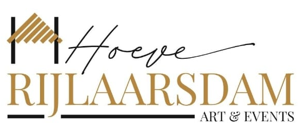

Het logo geeft drie signalen: een monolineair handschrift met een zeer lange uitloop, een hoog-contrast serif in kapitalen met haarfijne schreven en een sierlijke ampersand, en verder geen enkele sans. De sans mag dus stil zijn — die moet de serif laten praten.
1Gekozen: richting A (juli 2026) — dit staat nu in de tokens. Playfair Display staat qua contrast en schreefvorm het dichtst bij het woordmerk, werkt tot 11px in de navigatie nog leesbaar, en heeft de krullende ampersand uit het logo. Italianno is een veel betere match voor Hoeve dan Sacramento: dunner, breder, met dezelfde lange uitloop — en staat daarom nu in de tokens. Neem richting B als de site luxer en stiller moet voelen, C als de galerie de hoofdrol krijgt.
A · Klassiek & scherp — gekozen
De HoeveZakelijkRuimtes
van harte
Welkom
Op zoek naar een landelijke, sfeervolle, unieke evenementenlocatie in Nieuwkoop? Wat dacht u van een oude boerderij met beeldentuin, middenin de idyllische polder?
Vraag offerte aan
Italianno script · Playfair Display koppen, navigatie, buttons · Jost 300 bodytekst.
Dichtst bij het logo. Playfair is bewezen op kleine kapitalen; Jost houdt de bodytekst neutraal en modern.
B · Didone & luxe
De HoeveZakelijkRuimtes
van harte
Welkom
Op zoek naar een landelijke, sfeervolle, unieke evenementenlocatie in Nieuwkoop? Wat dacht u van een oude boerderij met beeldentuin, middenin de idyllische polder?
Vraag offerte aan
Italianno script · Bodoni Moda grote koppen · Prata navigatie en buttons · Mulish bodytekst.
Het hoogste contrast, dus het duurste gevoel — en het meest kwetsbaar: Bodoni valt onder 20px uiteen, daarom Prata voor de kleine kapitalen.
C · Galerie
De HoeveZakelijkRuimtes
van harte
Welkom
Op zoek naar een landelijke, sfeervolle, unieke evenementenlocatie in Nieuwkoop? Wat dacht u van een oude boerderij met beeldentuin, middenin de idyllische polder?
Vraag offerte aan
Mrs Saint Delafield script · Cormorant Garamond koppen en labels · Karla bodytekst.
Zachter en museaal, past bij de 19e-eeuwse collectie. Let op: Cormorant is licht — koppen mogen groter, kapitalen minstens 12px.
Alle genoemde fonts zijn gratis via Google Fonts, ook voor commercieel gebruik — u hoeft niets te licentiëren. Er is één betaalde overweging: als het woordmerk in het logo exact hetzelfde moet zijn als de koppen, laat de ontwerper dan de originele letter benoemen; nu is de uitsnede uit het JPEG de enige bron.